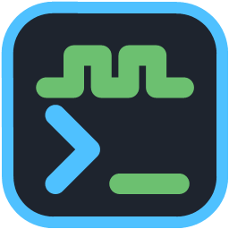
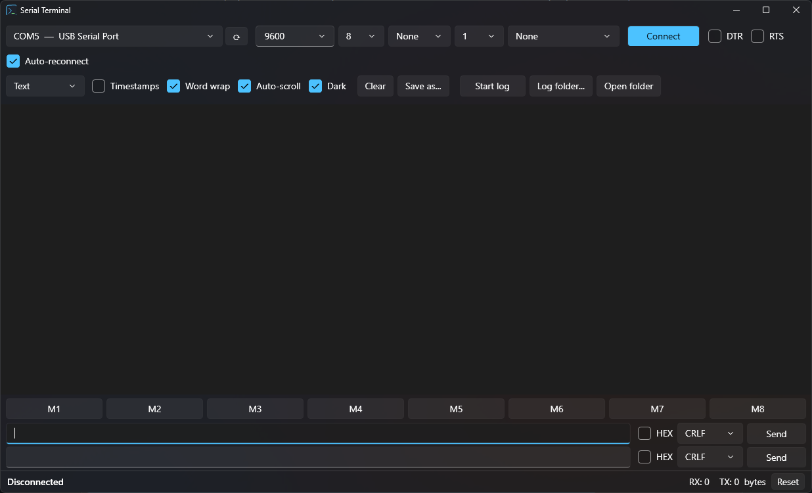

A free, open-source COM port terminal for Windows. Readable output, HEX mode, and logging to a file while you keep monitoring. Made for working with STM32, Arduino, ESP32 and Modbus devices.

SerialTerminal.exe (~62 MB). If Google Drive says it can't scan the file for viruses, choose Download anyway.You can also build it from source with the .NET 10 SDK:
git clone https://github.com/kod47/serial-terminal.git cd serial-terminal dotnet run
Serial Terminal is free. If it saves you time and you would like to support further development, you can donate via PayPal to:
kod447@gmail.com
Bug reports and ideas are welcome on GitHub Issues.